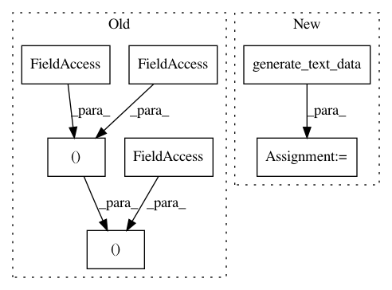

0ff5e51fc622f02e1c434ad10642f03e36168433,tests/integration_tests/functional_api_test.py,,test_text_and_structured_data,#Any#,22
Before Change
def test_text_and_structured_data(tmp_path):
// Prepare the data.
num_instances = 80
(x_text, y_train), (x_test, y_test) = utils.imdb_raw()
x_structured_data = pd.read_csv(utils.TRAIN_CSV_PATH)
x_text = x_text[:num_instances]
After Change
def test_text_and_structured_data(tmp_path):
// Prepare the data.
num_instances = 80
x_text = utils.generate_text_data(num_instances)
x_structured_data = pd.read_csv(utils.TRAIN_CSV_PATH)
x_structured_data = x_structured_data[:num_instances]
y_classification = utils.generate_one_hot_labels(
In pattern: SUPERPATTERN
Frequency: 4
Non-data size: 7
Instances
Project Name: keras-team/autokeras
Commit Name: 0ff5e51fc622f02e1c434ad10642f03e36168433
Time: 2020-11-11
Author: jhfjhfj1@gmail.com
File Name: tests/integration_tests/functional_api_test.py
Class Name:
Method Name: test_text_and_structured_data
Project Name: keras-team/autokeras
Commit Name: 0ff5e51fc622f02e1c434ad10642f03e36168433
Time: 2020-11-11
Author: jhfjhfj1@gmail.com
File Name: tests/autokeras/engine/tuner_test.py
Class Name:
Method Name: test_preprocessing_adapt_with_text_vec